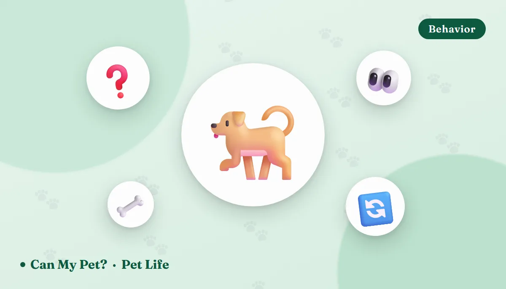

Common Dog Behaviors Explained: 14 Odd Habits, Decoded

Living with a dog means watching a small mammal do something completely inexplicable roughly twice a day and then look at you as if you are the strange one. Most of it is normal. Some of it is ancient. And a handful of these habits are the first thing a vet will ask about, because the same behavior that's charming at two years old can be a symptom at ten. Here's what's actually going on behind the fourteen behaviors dog owners ask about most — and the specific point at which each one stops being a quirk.
Energy, movement and sleep
1️⃣ The zoomies
Behaviorists call them FRAPs — frenetic random activity periods. A dog drops into a play bow, flattens its ears, tucks its rear and tears around the house in wide loops with a manic expression. It's a release valve for pent-up energy or arousal, which is why the classic triggers are so consistent: straight after a bath, straight out of the crate, after a vet visit, and around 8pm. Puppies do it constantly; most dogs do it less each year.
Normal because: it's play, not panic. The body is loose, the face is open, and it stops on its own.
Worth a call if: a dog whose exercise needs are genuinely met is doing this many times a day, or the running looks driven rather than joyful. That's usually boredom — check whether you're hitting the mark with our exercise needs guide.2️⃣ Circling before lying down
Three turns and a sigh. This is inherited nesting behavior: wild canids trample vegetation flat, check wind direction and scan their surroundings before committing to a sleeping spot. Your dog is doing this on a memory-foam bed because the instruction survived the sofa.
Worth a call if: an older dog circles for a long time, seems to struggle to lower itself, or repeatedly stands back up. That pattern often means joint pain rather than fussiness.3️⃣ Sleeping belly-up, or pressed against you
The exposed belly is a comfort and thermoregulation position — the thinly furred abdomen radiates heat, and no dog sleeps that way somewhere it feels unsafe. Sleeping in contact with you is straightforward social sleeping: dogs are a species that rests in a pile. We go deeper into positions in what your pet's sleeping position means (that one's just for fun) and into real rest in do dogs dream?
Nose, mouth and the strange things dogs eat
4️⃣ Sniffing every single thing on a walk
Not dawdling — reading. A dog's olfactory apparatus is orders of magnitude more sensitive than ours, and the scent left on a lamppost carries sex, rough age, health and how recently the other dog passed. Sniffing walks tire dogs out more effectively than fast ones, which is why "give them ten minutes to sniff" is standard advice for reactive and high-energy dogs. Our guide to a dog's sense of smell covers just how big the gap is.
5️⃣ Eating grass
The most over-diagnosed behavior in dogs. Owner surveys of healthy pets consistently find that grass-eating is very common, that most dogs eating grass showed no signs of illness beforehand, and that most don't vomit afterwards. It appears to be normal foraging, not self-medication.
Worth a call if: it's sudden and frantic, paired with lip-licking, gulping, drooling or repeated vomiting — or if the lawn is treated. Herbicides and pesticides are the real risk. Full detail in why do dogs eat grass? and on grass in the food checker.6️⃣ Chewing everything in the first year
Puppies explore with their mouths and teethe until roughly six months; adolescent dogs chew because it's self-soothing and because nobody told them the skirting board was off-limits. The fix is never punishment after the fact — it's management plus an acceptable outlet. DIY dog toys costs nothing and solves most of it.
Worth a call if: an adult dog starts destroying things only when left alone, especially near doors and windows. That's separation distress, not naughtiness, and it responds to a behavior plan rather than more exercise.7️⃣ Licking — you, the floor, itself
Licking you is social and self-reinforcing; it worked once and you responded. Persistent licking of hard floors, walls or a single patch of leg is a different animal: it's associated with nausea and gastrointestinal discomfort in some dogs, and with skin allergy or pain in others. We unpack the affectionate version in why does my dog lick me?
Worth a call if: your dog is licking surfaces obsessively, or grooming one spot until the hair thins.Communication signals people misread
8️⃣ Yawning and lip-licking when nobody's tired
These are appeasement signals — low-level stress communication. A dog who yawns while a child hugs it, or flicks its tongue over its nose while being examined, is politely saying it's uncomfortable. Reading these early is the single most useful skill an owner can learn, because the growl only arrives after they've been ignored. Start with dog body language explained.
9️⃣ Leaning against your legs
Usually contact-seeking — the canine equivalent of standing close. In a confident dog it's affection; in a worried one it's a request for backup, and you'll notice it spikes at the vet, in crowds and during fireworks. Neither version is dominance, a theory that dropped out of veterinary behavior decades ago.
🔟 Head tilting
The endearing one. Current thinking involves a mix of sound localisation, adjusting the visual field around a long muzzle, and plain reinforcement — we react delightedly every time, so it sticks. There's more in why does my dog tilt its head?
Worth a call if: the tilt is constant rather than situational, or comes with circling, stumbling or flicking eyes. A persistent head tilt can indicate an ear or vestibular problem.1️⃣1️⃣ Howling at sirens
Howling is long-distance canine contact-calling, and a siren sits in a frequency range close enough to trigger the reply. Your dog is not in pain and is not predicting anything — it's answering.
The frankly gross ones
1️⃣2️⃣ Rolling in something dead or foul
Nobody has proved why. The two leading hypotheses are scent-masking — a wolf's inheritance, disguising its own smell — and scent-carrying, bringing news of a find back to the group. Neither is settled science, and any confident explanation you read is a guess wearing a lab coat.
Worth a call if: they rolled in anything oily, chemical, or from a carcass. Wash it off before your dog grooms it and swallows it, and phone your vet if there's any chance of a toxin.1️⃣3️⃣ Scooting the bottom along the floor
Not funny and not a personality trait. Scooting means the area is irritated, and the three usual causes are full or infected anal sacs, intestinal parasites such as tapeworm, and allergic skin disease. Impacted anal sacs can abscess, which is painful and expensive.
Worth a call if: it happens more than once or twice. This one earns an appointment rather than a wait-and-see.1️⃣4️⃣ Kicking up grass after toileting, and reverse sneezing
The back-leg scrape isn't tidying up — it's scent-marking, spreading secretions from glands in the paws while making a visual signal at the same time. Reverse sneezing, that alarming honking snort, is a spasm of the soft palate; it looks catastrophic, lasts under a minute, and is common in small and flat-faced breeds.
Worth a call if: reverse sneezing becomes frequent, lengthens, or comes with nasal discharge or exercise intolerance.A quick triage table
| If you see… | Most likely | Call the vet when |
|---|---|---|
| Zoomies | Normal energy release | Constant, driven, in a well-exercised dog |
| Grass-eating | Normal foraging | Frantic, with drooling or repeat vomiting |
| Scooting | Anal sacs or parasites | More than once or twice — book it |
| Head tilt | Listening and looking | Persistent, with wobbling or eye flicking |
| Surface licking | Nausea or discomfort | Obsessive, or paired with appetite change |
| Any sudden change | Something medical | Always worth a conversation |
Frequently asked questions
Why does my dog get the zoomies after a bath?
A mix of relief that it's over, the odd sensation of a wet coat, and an urge to dry off by friction. It's one of the most reliable triggers there is, and completely normal.
Should I stop my dog eating grass?
Not on health grounds alone — it's common in perfectly well dogs. Do stop it on treated lawns, near roadsides, and if it comes with drooling, gulping or vomiting.
Is scooting always anal sacs?
No. Parasites and allergic skin disease cause it too, which is why guessing at home rarely helps. A vet can express, check a stool sample and settle it in one visit.
My dog only chews when I leave. Is that spite?
No. Dogs don't do revenge. Damage concentrated near exits, combined with vocalising or drooling while alone, points to separation distress — a welfare issue that needs a graded plan, not correction.
Why does my dog stare at me?
Usually a request, or affection: mutual gaze between dogs and their people raises oxytocin in both. A hard, still stare with a closed mouth and a stiff body is the opposite signal — give that dog space.
At what age do the weird behaviors settle?
Most dogs mellow noticeably between two and three. If yours is four and still bouncing off walls, look at daily enrichment and sleep before you look at training — under-slept dogs behave like under-slept toddlers.
Sources: American Kennel Club guidance on canine behavior, chewing, teething and enrichment; ASPCA behavior resources on separation anxiety, destructive chewing and body language; American Veterinary Society of Animal Behavior position statements on dominance theory and punishment; American Animal Hospital Association guidance on behavior change as a presenting sign of illness; and published veterinary literature on plant-eating in domestic dogs, anal sac disease, and human–dog gaze and oxytocin. For information only — not veterinary advice. Any new, sudden or escalating behavior change should be discussed with your veterinarian before it's treated as a training problem.